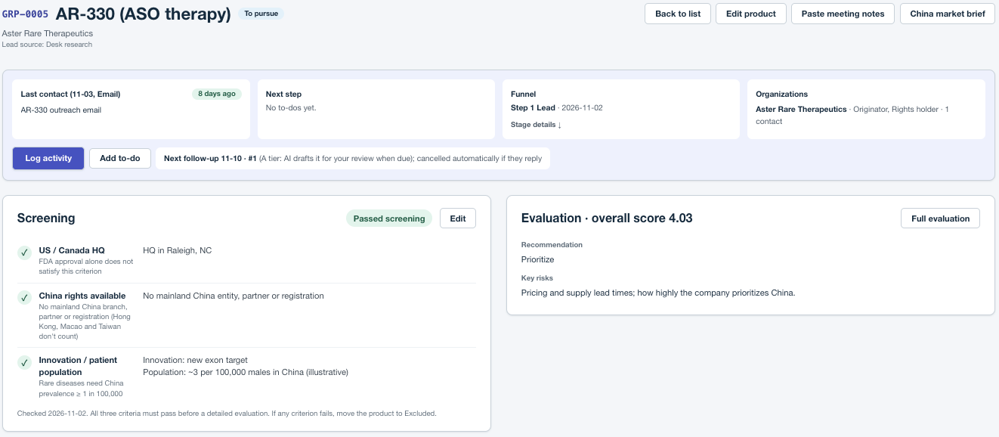
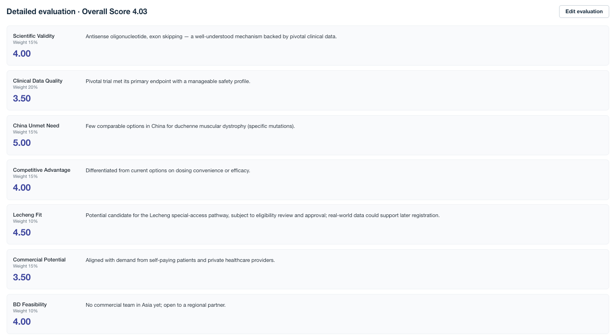

Check deal-breakers before detailed evaluation
For this version, I encoded the screening requirements used in my BD work. They are this project’s strategy, not Lecheng’s general entry rules. A candidate moves on to detailed evaluation only if it passes all three:
- Headquarters in the US or Canada, my assigned market.
- No mainland China entity, partner, or registration for the product.
- Innovative, or treating a rare disease. A rare-disease product must also reach a China prevalence of at least 1 in 100,000, even if it is innovative. Prevalence is a simplified stand-in for reachable patients, not a market sizing.
The rules came from a senior colleague, plus a few I learned by hitting dead ends and then confirmed with them. Written into the system, they no longer depend on what someone remembers to pass on. The evidence for each verdict is separate: company websites, SEC filings, partnership announcements, and China registration and trial records, each with a check date.
When the evidence can’t be found, the candidate is held back like a fail, but marked unverified and listed separately for review. That blocks automatic progression; it does not mean the candidate has been shown not to qualify. In the timed run one such candidate was later restored, as described under What my review changed.
I prioritized avoiding unsupported passes before investing in detailed evaluation and outreach. This can hold back suitable candidates when public information is incomplete, so unverifiable cases remain visible for manual review.


After screening: how candidates that pass are scored

